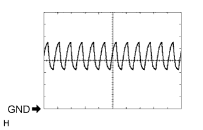
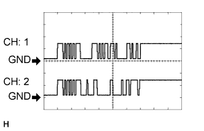

LEXUS PARKING ASSIST-SENSOR SYSTEM > TERMINALS OF ECU |
| CHECK CLEARANCE WARNING ECU (w/o Parking Assist Monitor System and/or Side Monitor System) |
Measure the voltage and resistance and check for pulse signals according to the value(s) in the table below.
| Terminal No. (Symbol) | Wiring Color | Terminal Description | Condition | Specified Condition |
| I1-7 (BOR) - I1-17 (E) | P - W-B | Power source for rear sensor circuit | Engine switch off | Below 1.5 V |
| Engine switch on (IG), LEXUS parking assist-sensor system on | 7.2 to 8.8 V | |||
| I1-9 (SOF) - I1-17 (E) | V - W-B | Front sensor communication signal (Front clearance sonar sensor) | Engine switch on (IG), LEXUS parking assist-sensor system on, shift lever in R | Pulse generation (See waveform 2) |
| I1-10 (BBZ) - I1-17 (E) | GR - W-B | Clearance warning buzzer signal | Engine switch off | Below 1.5 V |
| Engine switch on (IG), LEXUS parking assist-sensor system on | 11 to 14 V | |||
| I1-11 (EF) - I1-17 (E) | LG - W-B | Ground for clearance warning buzzer | When sonar detects obstacle (Buzzer sounds) | Pulse generation (See waveform 1) |
| I1-12 (CSSW) - I1-17 (E) | V - W-B | Clearance sonar main switch signal | Engine switch on (IG), clearance sonar main switch on | 11 to 14 V |
| Engine switch on (IG), clearance sonar main switch off | Below 1 V | |||
| I1-15 (IG) - I1-17 (E) | L - W-B | IG power source signal | Engine switch off | Below 1.5 V |
| Engine switch on (IG) | 11 to 14 V | |||
| I1-17 (E) - Body ground | W-B - Body ground | Ground | Always | Below 1 Ω |
| I1-18 (E2) - I1-17 (E) | R - W-B | Ground for rear clearance sonar | Always | Below 1 Ω |
| I1-19 (E1) - I1-17 (E) | G - W-B | Ground for front clearance sonar | Always | Below 1 Ω |
| I1-21 (BOF) - I1-17 (E) | R - W-B | Power source for front sensor circuit | Engine switch off | Below 1.5 V |
| Engine switch on (IG), LEXUS parking assist-sensor system on | 7.2 to 8.8 V | |||
| I1-24 (SOR) - I1-17 (E) | W - W-B | Rear sensor communication signal (Rear clearance sonar sensor) | Engine switch on (IG), LEXUS parking assist-sensor system on, shift lever in R | Pulse generation (See waveform 2) |
|  |
Using an oscilloscope, check waveform 1.
| Item | Content |
| Terminal No. (Symbol) | I1-11 (EF) - I1-17 (E) |
| Tool Setting | 2 V/DIV., 500 μsec./DIV. |
| Vehicle Condition | When sonar detects obstacle (Buzzer sounds) |
|  |
Using an oscilloscope, check waveform 2.
| Item | Content |
| Terminal No. (Symbol) |
|
| Tool Setting | 5 V/DIV., 1 msec./DIV. |
| Condition | Engine switch on (IG), LEXUS parking assist-sensor system on, shift lever in R |
| CHECK PARKING ASSIST ECU (w/ Parking Assist Monitor System and/or Side Monitor System) |

Measure the voltage and resistance and check for pulse signals according to the value(s) in the table below.
| Terminal No. (Symbol) | Wiring Color | Terminal Description | Condition | Specified Condition |
| I2-1 (CSB1) - I3-3 (GND1) | R - W-B | Power source for front sensor circuit | Engine switch off | Below 1.5 V |
| Engine switch on (IG), LEXUS parking assist-sensor system on | 7.2 to 8.8 V | |||
| I2-2 (CSG1) - I3-3 (GND1) | G - W-B | Ground for front clearance sonar sensor | Always | Below 1 Ω |
| I2-3 (LIN1) - I3-3 (GND1) | V - W-B | Front sensor communication signal (Front clearance sonar sensor) | Engine switch on (IG), LEXUS parking assist-sensor system on, shift lever in R | Pulse generation (See waveform 1) |
| I2-7 (CSB2) - I3-3 (GND1) | P - W-B | Power source for rear sensor circuit | Engine switch off | Below 1.5 V |
| Engine switch on (IG), LEXUS parking assist-sensor system on | 7.2 to 8.8 V | |||
| I2-8 (CSG2) - I3-3 (GND1) | R - W-B | Ground for front clearance sonar sensor | Always | Below 1 Ω |
| I2-9 (LIN2) - I3-3 (GND1) | W - W-B | Rear sensor communication signal (Rear clearance sonar sensor) | Engine switch on (IG), LEXUS parking assist-sensor system on, shift lever in R | Pulse generation (See waveform 1) |
| I3-1 (+B) - I3-3 (GND1) | L - W-B | Power source signal | Always | 11 to 14 V |
| I3-3 (GND1) - Body ground | W-B - Body ground | Ground | Always | Below 1 Ω |
| I3-7 (IG) - I3-3 (GND1) | L - W-B | IG power source signal | Engine switch on (IG) | 11 to 14 V |
| I3-8 (ACC) - I3-3 (GND1) | P - W-B | ACC power source signal | Engine switch on (ACC) | 11 to 14 V |
| I3-9 (CSSW) - I3-3 (GND1) | V - W-B | Clearance sonar main switch signal | Engine switch on (IG), clearance sonar main switch on | 11 to 14 V |
| Engine switch on (IG), clearance sonar main switch off | Below 1 V | |||
| I3-15 (REV) - I3-3 (GND1) | R - W-B | Reverse signal | Engine switch on (IG), shift lever in R | 11 to 14 V |
| Engine switch on (IG), shift lever not in R | Below 1 V | |||
| I3-17 (EF) - I3-3 (GND1) | LG - W-B | Ground for clearance warning buzzer | When sonar detects obstacle (Buzzer sounds) | Pulse generation (See waveform 2) |
| I3-18 (BBZ) - I3-3 (GND1) | GR - W-B | Clearance warning buzzer signal | Engine switch off | Below 1.5 V |
| Engine switch on (IG), LEXUS parking assist-sensor system on | 11 to 14 V | |||
| I3-24 (TX-) | LG | AVC-LAN communication signal | - | - |
| I3-25 (TX+) | L | AVC-LAN communication signal | - | - |
Using an oscilloscope, check waveform 1.
| Item | Content |
| Terminal No. (Symbol) |
|
| Tool Setting | 5 V/DIV., 1 msec./DIV. |
| Condition | Engine switch on (IG), LEXUS parking assist-sensor system on, shift lever in R |
Using an oscilloscope, check waveform 2.
| Item | Content |
| Terminal No. (Symbol) | I3-17 (EF) - I3-3 (GND1) |
| Tool Setting | 2 V/DIV., 500 μsec./DIV. |
| Vehicle Condition | When sonar detects obstacle (Buzzer sounds) |
| CHECK DRIVING SUPPORT SWITCH CONTROL ECU |
Measure the resistance according to the value(s) in the table below.
| Terminal No. (Symbol) | Wiring Color | Terminal Description | Condition | Specified Condition |
| G60-3 (SWI1) - G60-4 (SWI2) | SB - P | Steering pad switch assembly input signal (Menu, ENTER, Up, or Down switch) | Engine switch on (IG), Menu switch pressed | 0 V |
| Engine switch on (IG), ENTER switch pressed | 0.9 V | |||
| Engine switch on (IG), Up switch pressed | 3.4 V | |||
| Engine switch on (IG), Down switch pressed | 2.0 V | |||
| Engine switch on (IG), Menu, ENTER, Up, or Down switch not pressed | 4.9 V | |||
| G60-4 (SWI2) - Body ground | P - Body ground | Steering pad switch assembly input signal (Menu, ENTER, Up, or Down switch) | Always | Below 1 V |
| G60-12 (SWO1) - Body ground | V - Body ground | Steering pad switch assembly output signal (Menu, ENTER, Up, or Down switch) | Engine switch on (IG), Menu, ENTER, Up, or Down switch pressed to turn LEXUS parking assist-sensor system on | 11 to 14 V |
| Engine switch on (IG), Menu, ENTER, Up, or Down switch not pressed to turn LEXUS parking assist-sensor system off | Below 1 V |